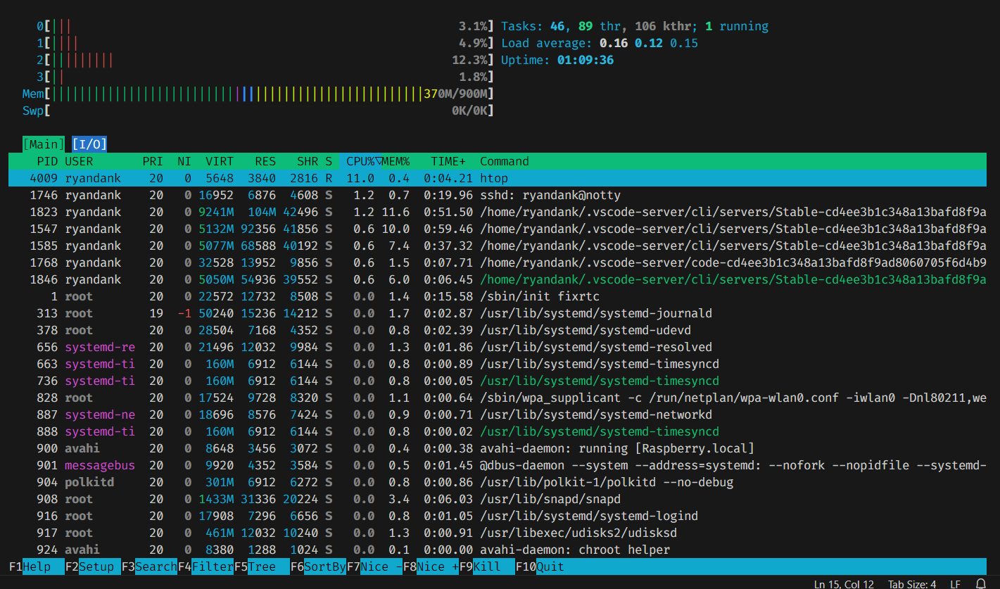

Raspberry Pi
Install Raspberry Pi OS without monitor or keyboard
First, visit this link Raspberry Pi Imager to download Raspberry Pi Imager.
Insert your microSD card into a card reader and connect it to your computer. Then, launch the Raspberry Pi Imager application.
Configure the following settings in the Raspberry Pi Imager:
Raspberry Pi Device: Select the device model you are using.
Raspberry Pi OS: Select Raspberry Pi OS 64 bit
Storage: Select your microSD card.
Click Next, then proceed to Edit Settings. In the settings window:
- General tab:
Set a hostname.
Configure a username and password.
Connect to your Wi-Fi network (make sure the Wi-Fi network matches the one your computer is using).
Services tab: Enable SSH.
After configuring the settings, click Save and confirm with Yes when prompted. Finally, allow the program to write the operating system to the microSD card.
Boot Raspberry Pi
Insert the microSD card into the Raspberry Pi board before connecting the power supply.
Connect a power source 5V (minimum 3A) to the Raspberry Pi.
Observe the green LED on the board. It should start blinking, indicating that the system is booting.
Find Raspberry Pi address and use SSH
Go to
User/user_name/.ssh, remove all file in this folderVisit this link to download Angry IP Scanner.
Install and launch the application.
Use it to scan for IP addresses on your network.
Look for the hostname that matches the Raspberry Pi username you set earlier. This will help you identify your Raspberry Pi’s IP address.
Open the terminal (or Command Prompt on Windows).
Use the following command to connect to your Raspberry Pi via SSH:
ssh username@ip-address Example: ssh Pi@192.168.1.9
Then type Yes and type your password and terminal change to Pi user
Enable VNC and use VNCTiger
Note
This instruction is for operating systems with a GUI. If your operating system does not have a GUI, please refer to the serial communication instructions.
When you are logged in as pi@raspberrypi, run the following command to open the Raspberry Pi configuration tool:
sudo raspi-configConfigure the settings as follows:
- Interface Options:
Select VNC and press Enter.
Choose Yes to enable VNC.
- System Options:
Select Boot/Auto login.
Choose Desktop Auto login and press Enter.
Navigate to Finish and confirm with Yes to reboot the Raspberry Pi and close terminal.
Visit this link to download TigerVNC.
Install and launch the application.
Enter the VNC server address (e.g., the IP address of your Raspberry Pi) and proceed.
Confirm any prompts with Yes until the VNC authentication window appears.
Enter the username and password you set for your Raspberry Pi to connect to the server.
Command for terminal
Shut down command
- Shut down now
sudo shutdown now
shut down after 5 minutes
sudo shutdown +5
shut down at specific time
sudo shutdown 23:00
Reboot Command
sudo reboot
Power off command
sudo poweroff
Install gpiozero library for ubuntu sever OS
sudo apt install python3-gpiozero
Install i2c-tools
Install i2c-tools
sudo apt install -y i2c-tools python3-smbus
Enable I2C in system
sudo nano /boot/firmware/config.txt
Add this line at the end of file (if not exist)
dtparam=i2c_arm=on
Save and exit file.
Check I2C status
sudo nano /etc/modules
Add these lines below to it if not exist yet
i2c-bcm2835 i2c-dev
Reboot Raspberry Pi
Check I2C
Check I2C is active or not
ls /dev/i2c-*Scan I2C slave
sudo i2cdetect -y 1
Install LCD for Raspberry Pi
Install RPLCD library
Demonstration code
from RPLCD.i2c import CharLCD import time # Init LCD lcd = CharLCD('PCF8574', 0x27) # Clear display lcd.clear() lcd.write_string("Hello, World!") time.sleep(5) lcd.clear() lcd.write_string("Raspberry Pi I2C")
Connect Raspberry Pi 3 B+ and Laptop via UART (Debian GNU/Linux 12 (bookworm))
Update your system’s package
sudo apt-get update
Connect usb UART between laptop and Raspberry Pi and open putty with baudrate = 115200
Open
config.txtfile.sudo nano /boot/firmware/config.txt
Add line below to the end of file.
enable_uart=1 dtoverlay=disable-bt init_uart_baud=115200 #Very important to configure baudrate
Save and exit file.
Reboot Raspberry Pi
sudo rebootCheck port
dev/ttyls /dev/tty*UART0 = /dev/ttyS0
Disable the console
sudo systemctl stop serial-getty@ttyS0.service sudo systemctl disable serial-getty@ttyS0.service
Open
cmdline.txtfile.sudo nano /boot/firmware/cmdline.txt
You will see something like this
console=serial0,115200 console=tty1 root=PARTUUID=faa9906f-02 rootfstype=ext4 fsck.repair=yes rootwait cfg80211.ieee80211_regdom=VN
remove the line:
console=serial0,115200 Save and reboot Raspberry Pi
Enable the Serial Console edit the file using
sudo nano /boot/firmware/cmdline.txt
console=serial0,115200 console=tty1 root=PARTUUID=faa9906f-02 rootfstype=ext4 fsck.repair=yes rootwait cfg80211.ieee80211_regdom=VN
Exit and save your changes. Reboot for the changes to take effect.
Reference:
Connect to new available wifi
Check connection
nmcli connection show
List of available Wifi
nmcli device wifi list
Connect to one wifi
sudo nmcli device wifi connect "my_wifi_network" password "my_password"
Delete wifi out of list
sudo nmcli connection delete uuid <uuid here>
Install Visual Studio Code on an Ubuntu Server without a GUI
You can use VS Code Remote Development by connecting to your server via SSH from another machine that has the VS Code GUI. Here’s a step-by-step guide:
Install Visual Studio Code on Your Personal Computer
Install the Remote Development Extension in VS Code
Open VS Code on your personal computer
Open the Extensions Marketplace (press Ctrl+Shift+X or click the Extensions icon in the sidebar).
Search for and install the Remote - SSH extension.
After installation, you’ll see a
><icon in the sidebar. Click on this icon.
Install VS Code Tools on Ubuntu Server via SSH
SSH into your Ubuntu Server from your personal computer:
ssh username@your_server_ipInstall OpenSSH on the server (if it’s not already installed) to enable SSH connections:
sudo apt update sudo apt install openssh-server
Check the SSH service status:
sudo systemctl status ssh
Make sure the SSH service is running. If it’s not, start it:
sudo systemctl start ssh
Use VS Code to Connect to Ubuntu Server via SSH
In VS Code on your personal computer, open the Remote Explorer.
Click the + button to add a new SSH connection.
Enter the Ubuntu server’s username and IP address.
Provide the password when prompted, or configure the connection with an SSH key.
Edit and Work Remotely on the Server
Once connected, you can edit files on the server as if you’re working locally. VS Code on your personal computer will interact with the files on your Ubuntu Server through SSH, while the server doesn’t need to have a GUI.
Note
Visual Studio Code runs on your personal computer but interacts with the code and files on the Ubuntu Server.
This method allows you to avoid installing a GUI on the server, yet still enjoy the full functionality of VS Code for development and remote work.
Observe RAM/ROM resources of system
Use the following command to observe status
htop